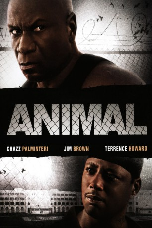

#7937 Animal - Gewalt hat einen Namen
Alternativ: Animal
 
 IMDB-Wertung: 6.0 / 10
IMDB-Wertung: 6.0 / 10  Metascore: 0
Metascore: 0 
Als ein brutaler Krimineller mit dem Spitznamen "Animal" ins Gefängnis kommt, lässt er seine Frau und den gemeinsamen Sohn Darius in der freien Welt zurück. Da sich seine Ansichten hinter Gittern verändern, will er nach der Haftstrafe seinen Sohn vor dem Schicksal des Vaters bewahren.
Jahr: 2005
Dauer: 97 Minuten
FSK: 16
Land: USA Studio: DEJ ProductionsTonspuren: DTS - ,
Untertitel: Deutsch,
Auflösung: 1080p (1920x1080) Größe: 8110 MB
Genre: Action, Drama
Regisseur: David J. Burke
Drehbuch: David C. Johnson
Soundtrack: Chris Thomas King
Darsteller:
 Ving Rhames als Animal
Ving Rhames als Animal Terrence Howard als Darius Allen
Terrence Howard als Darius Allen Chazz Palminteri als Kassada
Chazz Palminteri als Kassada Jim Brown als Berwell
Jim Brown als Berwell- Beverly Todd als Latreese
 Faizon Love als Double T
Faizon Love als Double T Wes Studi als Creeper
Wes Studi als Creeper Paula Jai Parker als Reecy
Paula Jai Parker als Reecy Taraji P. Henson als Ramona
Taraji P. Henson als Ramona- Modesto Lacen als Dinky
- Eugene Cotto als Assassin 1 - Berwell
- Carlos Esteban Fonseca als Big Dre
- Norman Santiago als Little Bill
- César Farrait als Roach
- Black Child als Spyda
- Hunter Howard als Young Darius
- Rafael Alvarez als Paul Wilson
- John Garcia als Bad Guy #2
- Norman Grant als CO #2
- Alfredo Herger als CO #1 (Willie Lynch)
- Joaquin Jarque als Police Leader
- Charlie Massó als New Fish
- Edwin Mercado als Assassin
- Néstor Rodulfo als Yard Dog
- Ramon Saldana als Trustee
- Noel Villafane als Inmate
- Katherine Zayas als Shae
Datei: X:\2005(A-F)\Animal - Gewalt hat einen Namen (2005, FSK16, 1920x1080).mkv seit 07.01.2018
Festplatte: HD 2003-2004-2005(A-F)
 Es gibt insgesamt 49 Filme in der Gruppe '2005(A-F)'
Es gibt insgesamt 49 Filme in der Gruppe '2005(A-F)'